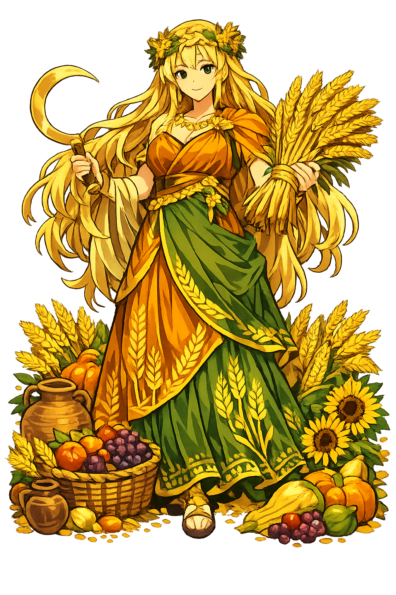

The Authentic Orthography
Harvest, Agriculture, Fertility · Earth Mother (from Δᾶ + μήτηρ)

Unicode restoration and ASCII comparison
Δημήτηρ
The name in its original Greek form. Dēmētēr (Δημήτηρ) is attested in the source tradition — “Earth Mother (from Δᾶ + μήτηρ)”. Its long vowels and acute accents carry the full phonetic and orthographic weight of the source tradition.
demeter
Reduced to plain demeter, the name loses everything that made it specific: long vowels and acute accents. What remains is an ASCII string that machines can parse but that no longer speaks with its original voice.
Dēmētēr
The Unicode restoration recovers what ASCII flattened. Dēmētēr restores long vowels and acute accents, returning the name to its original written dignity. The domain encodes to Punycode, but the browser displays the truth.
Dēmētēr.com → xn--dmtr-bvabb.com
The non-ASCII characters in Dēmētēr are encoded while the ASCII remains visible. To the DNS, it is Punycode. To humanity, it is Dēmētēr.
How Dēmētēr travels from ancient script to the modern URL
Greek Δημήτηρ; usually analysed as Δᾶ (Ge) “earth" + μήτηρ “mother", hence “Earth-Mother".
Harvest, Agriculture, Fertility
The Unicode restoration Dēmētēr preserves Greek stress and length; the ASCII form demeter loses these features.
How Dēmētēr was spoken
Agriculture, Fertility, Sacred Law, and the Eleusinian Mysteries
Dēmētēr is the foundation of Greek civilization. Without her, no bread, no wine, no city. She is the goddess of the grain that must die and rise again, and her mysteries at Eleusis promised initiates a better fate after death. Where Athena protects the city wall, Dēmētēr protects the field behind it.
Wheat, barley, and the agricultural cycle; the deity who turns seed into harvest through death and rebirth.
Patron of marriage, childbirth, and the fertility of the land; her power moves through both soil and womb.
Thesmophoros: she establishes the laws and rituals that bind society, especially those governing women.
The most famous mystery cult of the ancient world, promising initiates blessedness after death.
Stories of Dēmētēr
Dēmētēr's mythology is dominated by one event: the loss and recovery of her daughter Persephonē. That single story encodes the origin of winter, the foundation of agriculture, and the hope of immortality.
In the Homeric Hymn to Demeter (lines 1–89), Hādēs bursts from the earth at Eleusis and seizes Persephonē while she gathers a narcissus planted by Gaia at Zeús's command. Dēmētēr's search takes her across the world for nine days, until Hekátē and Hēlios reveal the truth. Her grief is the origin of winter: the earth refuses to bear fruit while the grain goddess mourns.
Disguised as an old woman named Doso, Dēmētēr is welcomed into the house of King Celeus at Eleusis. She attempts to make the mortal child Demophoôn immortal by holding him in the fire each night, but his mother Metaneira interrupts the rite. The goddess reveals herself in blazing glory and demands a temple and mysteries. This is the aition — the founding myth — of the Eleusinian sanctuary (Hymn 90–298).
Zeús sends Hermês to retrieve Persephonē, but because she has eaten a pomegranate seed in the underworld, she must return there for part of each year. The compromise creates the seasons: when Persephonē is below, Dēmētēr grieves and nothing grows; when she returns, the earth blossoms. The myth is not merely explanatory but theological: death and return are built into the structure of life.
The Eleusinian Mysteries were celebrated for nearly two thousand years, from the Bronze Age to the late Roman Empire. Initiates underwent ritual washing, fasting, and a procession from Athens to Eleusis, culminating in the revelation of secret objects and a promise of a better afterlife. The Roman orator Cicero wrote that the mysteries taught us 'how to live in joy and how to die with better hope' (On the Laws 2.36).
Dēmētēr is the goddess of the obvious miracle: a seed buried in darkness becomes bread. The Greeks did not take this for granted. They saw in every harvest a repetition of Persephonē's return — the dead returning to life, the mother rejoicing, the community fed. The Eleusinian Mysteries made this agricultural fact into a promise about the soul.
Enter Extended Lore